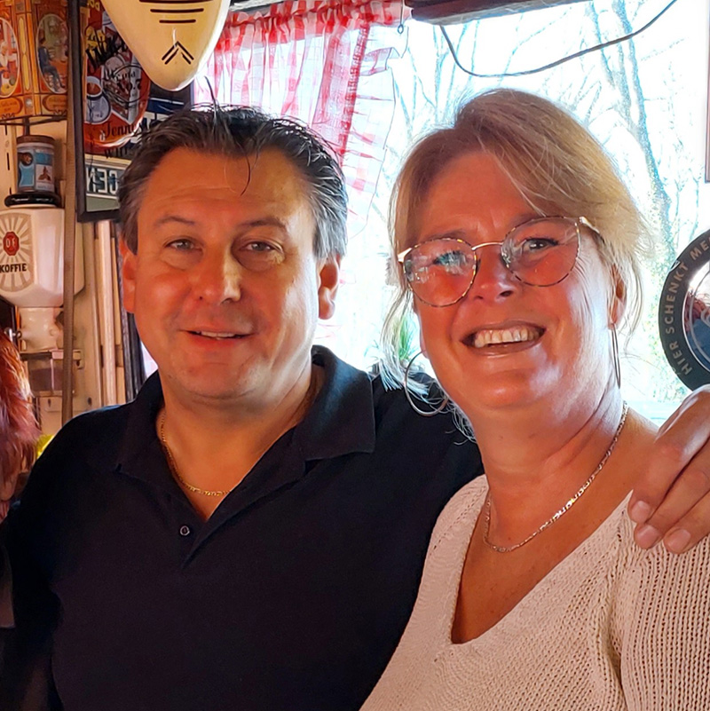

Even voorstellen
Wat in 1938 begon als een houten keet van 2 x 6 meter, waar men alleen koffie kon drinken en waar schilders, loodgieters en andere vaklui zaten te wachten op werk, is anno nu uitgegroeid tot een volwaardig koffiehuis met een gezellig terrasje aan het water.
Op het menu staan verse, zachte broodjes belegd met huisgemaakte gerechten zoals een bal gehakt, stoofvlees en hete kip. Ook de soepen worden dagelijks vers gemaakt en een “broodje kaas” is hier nog gewoon een broodje kaas, zonder onnodige toevoegingen.
Wat gebleven is, zijn de ambachtslieden, de ouderwetse filterkoffie (voor een nog steeds ouderwetse prijs) en de ouderwetse inrichting waarin genoeg te zien is. Je zult hier geen laptops op tafel aantreffen, maar heel ouderwets de papieren krant. Contant betalen blijft, ook heel ouderwets, de voorkeur houden, maar pinnen is ook mogelijk.
De doelgroep is, en blijft, de werklieden. Maar passanten, toeristen en buurtgenoten zijn uiteraard ook van harte welkom. Voor mindervaliden en gezinnen met (kleine) kinderen is het koffiehuis minder geschikt.

“Voor half 2 snel komt schaften, en na half 2 rustiger komt lunchen.”
Tot ziens in ons koffiehuis, Serge en Jet